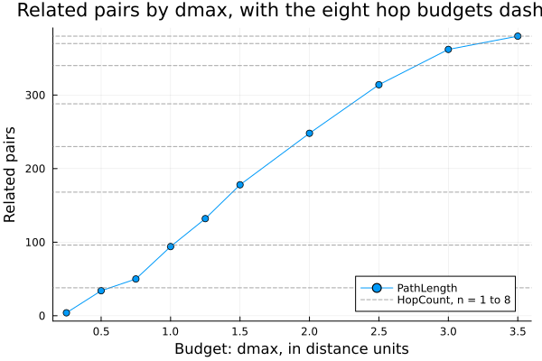
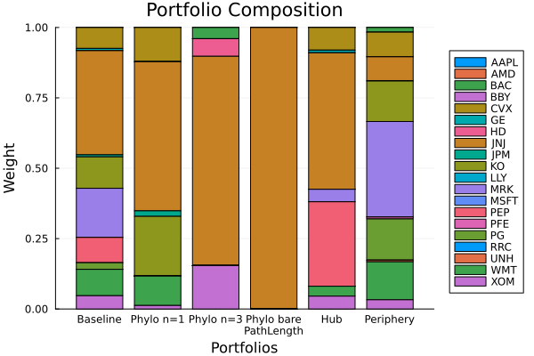

The source files can be found in examples/.
Phylogeny and centrality constraints
The constraints in Linear and group constraints act on asset names and on groups that you write by hand. Phylogeny and centrality constraints act on the asset network instead. The asset network is a graph whose nodes are the assets, and whose edges join assets whose returns move together. In place of a cap such as "tech ≤ 30%", you tell the optimiser to hold few assets that are close in the network, or to tilt toward or away from the assets with many edges.
PortfolioOptimisers.jl builds the network with a NetworkEstimator or with a clustering estimator. We call that estimator the source of the network. Two families of constraints use it.
- Phylogeny constraints,
SemiDefinitePhylogenyEstimatorandIntegerPhylogenyEstimator, go through theplekeyword. They limit how you hold assets that are close in the network. - Centrality constraints, a
CentralityConstraintbuilt from aCentralityEstimator, go through thectekeyword. They bound the weighted average centrality of the portfolio.
Reach for these constraints when you want to diversify by the structure of the returns rather than by labels. A portfolio can spread over many sectors and still be one large bet on assets whose returns move together. You can also tilt the portfolio toward the hubs of the network, or toward its periphery. You write no groups by hand, because the network comes from the covariance. The semidefinite phylogeny constraint and the centrality constraint are convex. The integer phylogeny constraint needs a mixed-integer solver.
One parameter decides which assets count as related, and its value sets how strong a phylogeny constraint is. It is the sep field of a NetworkEstimator, and section 2 covers it. Section 4.1 shows which centrality scores it changes.
using PortfolioOptimisers, CSV, TimeSeries, DataFrames, PrettyTables, Clarabel, StatsPlots, GraphRecipesresfmt = (v, i, j) -> begin return if j == 1 v else isa(v, AbstractFloat) ? "$(round(v*100, digits=3)) %" : v endend;1. Data
We load a year of prices, fit an empirical prior, and solve the minimum-risk portfolio with no network constraint. It is the baseline for every comparison below.
X = TimeArray(CSV.File(joinpath(@__DIR__, "..", "SP500.csv.gz")); timestamp = :Date)[(end - 252):end]rd = prices_to_returns(X)pr = prior(EmpiricalPrior(), rd)slv = Solver(; name = :clarabel, solver = Clarabel.Optimizer, settings = Dict("verbose" => false), check_sol = (; allow_local = true, allow_almost = true))res_base = optimise(MeanRisk(; obj = MinimumRisk(), opt = JuMPOptimiser(; pe = pr, slv = slv)))MeanRiskResult
jr ┼ JuMPOptimisationResult
│ pa ┼ ProcessedJuMPOptimiserAttributes
│ │ pr ┼ LowOrderPrior
│ │ │ X ┼ 252×20 Matrix{Float64}
│ │ │ o_X ┼ nothing
│ │ │ mu ┼ 20-element Vector{Float64}
│ │ │ sigma ┼ 20×20 Matrix{Float64}
│ │ │ chol ┼ nothing
│ │ │ w ┼ nothing
│ │ │ ens ┼ nothing
│ │ │ kld ┼ nothing
│ │ │ ow ┼ nothing
│ │ │ rr ┼ nothing
│ │ │ fpr ┴ nothing
│ │ wb ┼ WeightBounds
│ │ │ lb ┼ 20-element StepRangeLen{Float64, Base.TwicePrecision{Float64}, Base.TwicePrecision{Float64}, Int64}
│ │ │ ub ┴ 20-element StepRangeLen{Float64, Base.TwicePrecision{Float64}, Base.TwicePrecision{Float64}, Int64}
│ │ lt ┼ nothing
│ │ st ┼ nothing
│ │ lcsr ┼ nothing
│ │ ctr ┼ nothing
│ │ gcardr ┼ nothing
│ │ sgcardr ┼ nothing
│ │ smtx ┼ nothing
│ │ sgmtx ┼ nothing
│ │ slt ┼ nothing
│ │ sst ┼ nothing
│ │ sglt ┼ nothing
│ │ sgst ┼ nothing
│ │ tn ┼ nothing
│ │ fees ┼ nothing
│ │ plr ┼ nothing
│ │ ret ┼ ArithmeticReturn
│ │ │ settings ┼ JuMPReturnsSettings
│ │ │ │ scale ┼ Float64: 1.0
│ │ │ │ lb ┼ nothing
│ │ │ │ rte ┼ Bool: true
│ │ │ │ fee ┼ Bool: true
│ │ │ │ mic ┴ Bool: true
│ │ │ ucs ┼ nothing
│ │ │ mu ┴ 20-element Vector{Float64}
│ │ sca ┼ SumScalariser()
│ │ imsk ┴ nothing
│ retcode ┼ OptimisationSuccess
│ │ res ┴ Dict{Any, Any}: Dict{Any, Any}()
│ sol ┼ JuMPOptimisationSolution
│ │ w ┴ 20-element Vector{Float64}
│ model ┼ A JuMP Model
│ │ ├ solver: Clarabel
│ │ ├ objective_sense: MIN_SENSE
│ │ │ └ objective_function_type: QuadExpr
│ │ ├ num_variables: 21
│ │ ├ num_constraints: 4
│ │ │ ├ AffExpr in MOI.EqualTo{Float64}: 1
│ │ │ ├ Vector{AffExpr} in MOI.Nonnegatives: 1
│ │ │ ├ Vector{AffExpr} in MOI.Nonpositives: 1
│ │ │ └ Vector{AffExpr} in MOI.SecondOrderCone: 1
│ │ └ Names registered in the model
│ │ └ :G, :T, :bgt, :cdev_soc_1, :dev_1, :k, :lw, :obj_expr, :ret, :ret_1, :ret_vec, :risk, :risk_minimised, :risk_vec, :sc, :so, :variance_flag, :variance_risk_1, :w, :w_lb, :w_ub
r ┼ Variance
│ settings ┼ RiskMeasureSettings
│ │ scale ┼ Float64: 1.0
│ │ ub ┼ nothing
│ │ rke ┴ Bool: true
│ sigma ┼ 20×20 Matrix{Float64}
│ chol ┼ nothing
│ rc ┼ nothing
│ alg ┴ SquaredSOCRiskExpr()
fb ┴ nothing
2. The asset network
A NetworkEstimator turns the covariance into a graph. Each asset is a node. The estimator keeps only the strongest connections between the assets, by default as a minimum spanning tree, and each connection it keeps is an edge. Both families of constraints below use this graph. You do not build it yourself. The constraint estimators take a NetworkEstimator() and build the graph from the prior.
2.1 How far apart two assets can be and still count as related
The graph shows only which assets share an edge. A phylogeny constraint also needs to know how far apart two assets can be and still count as related. The sep field of the NetworkEstimator sets that distance. It decides how much of the universe a phylogeny constraint treats as one bet.
A separation measures how far apart two assets are in the graph. The library has two, and they measure the same graph in different units.
HopCountcounts edges and ignores their lengths. Its budgetnis a number of edges.HopCount(; n = 1)is the default, and it relates only the assets that share an edge.PathLengthadds up the distances along the shortest path between two assets. Its budgetdmaxis in those distance units.
Every constraint accepts either separation. The budgets are in different units, so a value of n and a value of dmax do not compare. Pick the unit that you find easier to reason about. Then look at the number of pairs that the budget relates, because the value of the budget alone does not tell you how tight the constraint is.
We count the related pairs for eight hop budgets and ten dmax budgets, and sort the rows by that count. The last column divides the count by the number of ordered pairs of assets.
n_assets = size(pr.X, 2)n_pairs = n_assets * (n_assets - 1)related_pairs(sep) = count(!iszero, phylogeny_matrix(NetworkEstimator(; sep = sep), pr).X)hop_budgets = 1:8dmax_budgets = [0.25, 0.5, 0.75, 1.0, 1.25, 1.5, 2.0, 2.5, 3.0, 3.5]hop_pairs = [related_pairs(HopCount(; n = n)) for n in hop_budgets]dmax_pairs = [related_pairs(PathLength(; dmax = d)) for d in dmax_budgets]ladder = DataFrame("Separation" => [["HopCount" for _ in hop_budgets]; ["PathLength" for _ in dmax_budgets]], "Budget" => [string.(hop_budgets); string.(dmax_budgets)], "Related pairs" => [hop_pairs; dmax_pairs], "Share of pairs" => [hop_pairs; dmax_pairs] ./ n_pairs)sort!(ladder, "Related pairs")pretty_table(ladder; formatters = [(v, i, j) -> j == 4 ? "$(round(v*100, digits=1)) %" : v], title = "Related pairs for each separation and budget") Related pairs for each separation and budget
┌────────────┬────────┬───────────────┬────────────────┐
│ Separation │ Budget │ Related pairs │ Share of pairs │
│ String │ String │ Int64 │ Float64 │
├────────────┼────────┼───────────────┼────────────────┤
│ PathLength │ 0.25 │ 4 │ 1.1 % │
│ PathLength │ 0.5 │ 34 │ 8.9 % │
│ HopCount │ 1 │ 38 │ 10.0 % │
│ PathLength │ 0.75 │ 50 │ 13.2 % │
│ PathLength │ 1.0 │ 94 │ 24.7 % │
│ HopCount │ 2 │ 96 │ 25.3 % │
│ PathLength │ 1.25 │ 132 │ 34.7 % │
│ HopCount │ 3 │ 168 │ 44.2 % │
│ PathLength │ 1.5 │ 178 │ 46.8 % │
│ HopCount │ 4 │ 230 │ 60.5 % │
│ PathLength │ 2.0 │ 248 │ 65.3 % │
│ HopCount │ 5 │ 288 │ 75.8 % │
│ PathLength │ 2.5 │ 314 │ 82.6 % │
│ HopCount │ 6 │ 340 │ 89.5 % │
│ PathLength │ 3.0 │ 362 │ 95.3 % │
│ HopCount │ 7 │ 370 │ 97.4 % │
│ HopCount │ 8 │ 380 │ 100.0 % │
│ PathLength │ 3.5 │ 380 │ 100.0 % │
└────────────┴────────┴───────────────┴────────────────┘2.2 A radius fills the gaps between the hop budgets
The hop budgets give eight values of the count and nothing between them, because one more hop relates every pair at that distance at once. We call the pairs that one more hop adds a hop shell. The PathLength rows fall in the gaps between the hop shells, and the smallest dmax relates fewer pairs than HopCount(; n = 1).
A dmax is a radius. It relates each asset to every asset within that distance of it along the graph. The radius changes in steps as small as you like, and a hop count changes only a whole hop shell at a time. Use PathLength when one hop shell relates more pairs than you want the constraint to cover.
We plot the count of related pairs against dmax, with a dashed line at the count of each hop budget.
plot(dmax_budgets, dmax_pairs; label = "PathLength", marker = :circle, xlabel = "Budget: dmax, in distance units", ylabel = "Related pairs", title = "Related pairs by dmax, with the eight hop budgets dashed", legend = :bottomright)hline!(hop_pairs; label = "HopCount, n = 1 to 8", linestyle = :dash, color = :grey, linealpha = 0.7)
The largest useful budget for either separation is the diameter of the graph, the longest of the shortest paths between two assets. separation_matrix returns the separation of every pair, and separation_budget returns the budget that a separation resolves to. The phylogeny constraints call both functions to find their budget. We print the diameter in both units, the shortest edge, and the budgets that two PathLength settings resolve to.
sep_matrix = separation_matrix(PathLength(), NetworkEstimator(), pr.X)finite_seps = filter(isfinite, sep_matrix)pretty_table(DataFrame("Quantity" => ["Observed diameter (distance units)", "Closest linked pair (distance units)", "Diameter in hops", "Budget resolved from PathLength()", "Budget resolved from PathLength(; dmax = 100)"], "Value" => [string(round(maximum(finite_seps); digits = 4)), string(round(minimum(filter(>(0), finite_seps)); digits = 4)), string(maximum(separation_matrix(HopCount(), NetworkEstimator(), pr.X))), string(round(separation_budget(PathLength(), NetworkEstimator(), sep_matrix); digits = 4)), string(round(separation_budget(PathLength(; dmax = 100), NetworkEstimator(), sep_matrix); digits = 4))]); title = "Diameter, shortest edge and two resolved budgets") Diameter, shortest edge and two resolved budgets
┌───────────────────────────────────────────────┬────────┐
│ Quantity │ Value │
│ String │ String │
├───────────────────────────────────────────────┼────────┤
│ Observed diameter (distance units) │ 3.4743 │
│ Closest linked pair (distance units) │ 0.2253 │
│ Diameter in hops │ 8 │
│ Budget resolved from PathLength() │ 3.4743 │
│ Budget resolved from PathLength(; dmax = 100) │ 3.4743 │
└───────────────────────────────────────────────┴────────┘The library cuts a dmax above the diameter down to the diameter. A large budget therefore relates no more than the whole connected component.
dmax = nothing is the default of PathLength, and it means the whole connected component. The library uses the observed diameter above for it. A constraint then treats every reachable pair as related. The phylogeny matrix marks each related pair with a nonzero entry. For NetworkEstimator(; sep = PathLength()) it is ones off the diagonal, and it relates 100 % of pairs, as the last rows of the table in section 2.1 do. It is the opposite extreme from the default n = 1 of HopCount(), and you reach it when you change the type of the separation and nothing else. The library does not guard against it. The optimisation succeeds and returns a portfolio of one asset, as section 3.1 shows. Give a numeric dmax to relate fewer pairs.
A PhylogenyPanel also uses a sep, through the NetworkEstimator in its pl field. The panel does not build a constraint. It builds a proximity matrix, which scores how close each asset is to each other asset. The decay field of Proximity sets how that score falls with distance. A LinearDecay falls by one for each unit of separation and reaches 1 at the budget of sep, and a pair past the budget scores zero. PathLength() with no dmax suits a panel, but in a constraint it relates every pair. sep and decay are fields of different types, and neither sets the other.
2.3 When you cannot state the budget in advance
A cross-validation fold fits the graph again on different rows. A meta optimiser such as NestedClustered or SubsetResampling fits it again on a different set of assets. A dmax that you tuned on one graph then applies to graphs that you did not tune it on.
So each budget field also accepts a rule. A rule is a callable that gets the estimator, the data and the graph built from them, and returns the budget. n accepts a HopCountAlgorithm, dmax accepts a PathLengthAlgorithm, and either accepts a plain function with the same arguments. resolve_separation calls the rule when a constraint needs its budget. It passes the graph that the constraint already built, and a rule never needs a second graph. The library gives one rule for each field, HopCountQuantile and PathLengthQuantile. Each puts the budget at a quantile of the observed separations.
A rule changes which quantity stays fixed. A fixed dmax keeps the radius fixed, and the number of related pairs changes with the graph. A quantile rule keeps the number of related pairs fixed, and the radius changes. The number of related pairs sets the strength of a constraint, and the quantile rule keeps that strength from fold to fold.
We split the year into four folds and fit the graph on each. For each fold we count the related pairs under a fixed dmax and under the rule PathLengthQuantile(; q = 0.25), and we print the dmax that the rule resolves to.
folds = [1:63, 64:126, 127:189, 190:252]function fold_sep(sep, f) return count(!iszero, phylogeny_matrix(NetworkEstimator(; sep = sep), pr.X[f, :]).X)endq_rule = PathLengthQuantile(; q = 0.25)function resolved_dmax(f) return resolve_separation(PathLength(; dmax = q_rule), NetworkEstimator(), pr.X[f, :]).dmaxendpretty_table(DataFrame("Fold" => ["$(first(f)) to $(last(f))" for f in folds], "Fixed dmax = 1.0107" => [fold_sep(PathLength(; dmax = 1.0107), f) for f in folds], "Rule: resolved dmax" => [round(resolved_dmax(f); digits = 4) for f in folds], "Rule: related pairs" => [fold_sep(PathLength(; dmax = q_rule), f) for f in folds]); title = "Fixed dmax and the 0.25 quantile rule in each fold") Fixed dmax and the 0.25 quantile rule in each fold
┌────────────┬─────────────────────┬─────────────────────┬─────────────────────┐
│ Fold │ Fixed dmax = 1.0107 │ Rule: resolved dmax │ Rule: related pairs │
│ String │ Int64 │ Float64 │ Int64 │
├────────────┼─────────────────────┼─────────────────────┼─────────────────────┤
│ 1 to 63 │ 84 │ 1.2055 │ 96 │
│ 64 to 126 │ 110 │ 0.8574 │ 96 │
│ 127 to 189 │ 96 │ 0.9947 │ 96 │
│ 190 to 252 │ 110 │ 0.9427 │ 96 │
└────────────┴─────────────────────┴─────────────────────┴─────────────────────┘The fixed dmax = 1.0107 is the 0.25 quantile of the separations over the whole year. The second column shows that one radius relates a different number of pairs in each fold. The constraint then has a different strength in each fold. The fourth column shows that the rule relates the same number of pairs in every fold. The third column shows the radius that the rule moves to keep that number.
The two quantile rules do not do this equally well, and the cause is the unit. q is continuous, but a hop count is an integer, so HopCountQuantile must round. The hop shells of section 2.2 are large, and the rounding moves the share of related pairs far from q. We ask each rule for six values of q and print the share of pairs that it relates.
q_grid = [0.1, 0.2, 0.25, 0.3, 0.5, 0.75]pretty_table(DataFrame("q" => q_grid, "HopCountQuantile: n" => [resolve_separation(HopCount(; n = HopCountQuantile(; q = q)), NetworkEstimator(), pr.X).n for q in q_grid], "HopCountQuantile: share" => [related_pairs(HopCount(; n = HopCountQuantile(; q = q))) / n_pairs for q in q_grid], "PathLengthQuantile: share" => [related_pairs(PathLength(; dmax = PathLengthQuantile(; q = q))) / n_pairs for q in q_grid]); formatters = [(v, i, j) -> j in (3, 4) ? "$(round(v*100, digits=1)) %" : v], title = "Resolved n and share of related pairs, by q") Resolved n and share of related pairs, by q
┌─────────┬─────────────────────┬─────────────────────────┬───────────────────────────┐
│ q │ HopCountQuantile: n │ HopCountQuantile: share │ PathLengthQuantile: share │
│ Float64 │ Int64 │ Float64 │ Float64 │
├─────────┼─────────────────────┼─────────────────────────┼───────────────────────────┤
│ 0.1 │ 2 │ 25.3 % │ 10.0 % │
│ 0.2 │ 2 │ 25.3 % │ 20.0 % │
│ 0.25 │ 2 │ 25.3 % │ 25.3 % │
│ 0.3 │ 3 │ 44.2 % │ 30.0 % │
│ 0.5 │ 4 │ 60.5 % │ 50.0 % │
│ 0.75 │ 5 │ 75.8 % │ 75.3 % │
└─────────┴─────────────────────┴─────────────────────────┴───────────────────────────┘PathLengthQuantile relates a share of the pairs that differs from q by at most one pair. HopCountQuantile can miss q by a whole hop shell. Three values of q resolve to n = 2, because the second hop shell is large. Use PathLengthQuantile when you want a set share of the pairs.
A HopCountAlgorithm must return an Integer, because the library uses 0:n as a range of matrix powers. A PathLengthAlgorithm must return a Number. The return type of a callable is not part of its signature, so resolve_separation checks the value each time it calls the rule. Your own rule needs a type and one method. The third argument is the graph that the constraint built. Use it, and do not build another:
struct AssetScaledHops <: PortfolioOptimisers.HopCountAlgorithm frac::Float64endfunction (r::AssetScaledHops)(nte, X, g; dims::Int = 1, kwargs...) return max(1, round(Int, r.frac * PortfolioOptimisers.Graphs.nv(g)))end3. Phylogeny constraints
A SemiDefinitePhylogenyEstimator is a convex relaxation of the rule "hold no two related assets". It does not forbid a joint holding. It removes the diversification benefit between related assets from the variance that the optimiser minimises, and the problem stays convex. We pass it through ple and compare the minimum-risk weights with the baseline weights.
res_phylo = optimise(MeanRisk(; obj = MinimumRisk(), opt = JuMPOptimiser(; pe = pr, slv = slv, ple = SemiDefinitePhylogenyEstimator(; pl = NetworkEstimator()))))pretty_table(DataFrame("Asset" => rd.nx, "Baseline" => res_base.w, "Phylogeny" => res_phylo.w); formatters = [resfmt], title = "Minimum-risk weights, baseline and phylogeny constraint")Minimum-risk weights, baseline and phylogeny constraint
┌────────┬──────────┬───────────┐
│ Asset │ Baseline │ Phylogeny │
│ String │ Float64 │ Float64 │
├────────┼──────────┼───────────┤
│ AAPL │ 0.0 % │ 0.0 % │
│ AMD │ 0.0 % │ 0.0 % │
│ BAC │ 0.0 % │ 0.005 % │
│ BBY │ 0.0 % │ 0.0 % │
│ CVX │ 7.432 % │ 12.063 % │
│ GE │ 0.806 % │ 0.109 % │
│ HD │ 0.0 % │ 0.001 % │
│ JNJ │ 36.974 % │ 52.972 % │
│ JPM │ 0.749 % │ 1.95 % │
│ KO │ 11.161 % │ 21.12 % │
│ LLY │ 0.0 % │ 0.001 % │
│ MRK │ 17.467 % │ 0.024 % │
│ MSFT │ 0.0 % │ 0.001 % │
│ PEP │ 8.978 % │ 0.029 % │
│ PFE │ 0.0 % │ 0.0 % │
│ PG │ 2.353 % │ 0.033 % │
│ RRC │ 0.0 % │ 0.0 % │
│ UNH │ 0.0 % │ 0.005 % │
│ WMT │ 9.355 % │ 10.444 % │
│ XOM │ 4.725 % │ 1.241 % │
└────────┴──────────┴───────────┘The constraint moves weight between many assets, and section 3.1 prints the size of that move as a turnover. IntegerPhylogenyEstimator sets a hard limit on how many assets you hold from each neighbourhood of the network. A neighbourhood is an asset and the assets related to it, or a cluster when the source is a clustering estimator. The constraint needs a mixed-integer solver, because it uses binary variables. Cardinality and threshold shows how to set up a mixed-integer solver.
3.1 The separation sets the strength of the constraint
The estimator above uses the default sep = HopCount(; n = 1). A wider separation makes the constraint treat more assets as one bet. We solve the minimum-risk portfolio under six separations. For each one we print the related pairs, the largest weight, the number of assets held, and the turnover from the baseline.
sep_sweep = ["HopCount(; n = 1)" => HopCount(; n = 1), "HopCount(; n = 3)" => HopCount(; n = 3), "PathLength(; dmax = 0.5)" => PathLength(; dmax = 0.5), "PathLength(; dmax = 1.5)" => PathLength(; dmax = 1.5), "PathLengthQuantile(; q = 0.25)" => PathLength(; dmax = q_rule), "PathLength()" => PathLength()]res_sweep = [optimise(MeanRisk(; obj = MinimumRisk(), opt = JuMPOptimiser(; pe = pr, slv = slv, ple = SemiDefinitePhylogenyEstimator(; pl = NetworkEstimator(; sep = sep))))) for (_, sep) in sep_sweep]pretty_table(DataFrame("Separation" => ["none (baseline)"; first.(sep_sweep)], "Related pairs" => ["none"; string.(related_pairs.(last.(sep_sweep)))], "Largest weight" => [maximum(res_base.w); [maximum(r.w) for r in res_sweep]], "Names held" => [count(>(1e-4), res_base.w); [count(>(1e-4), r.w) for r in res_sweep]], "Turnover from baseline" => [0.0; [sum(abs, r.w .- res_base.w) for r in res_sweep]]); formatters = [(v, i, j) -> begin return if j in (1, 2, 4) v else "$(round(v*100, digits=2)) %" end end], title = "Minimum-risk portfolio for six phylogeny separations") Minimum-risk portfolio for six phylogeny separations
┌────────────────────────────────┬───────────────┬────────────────┬────────────┬────────────────────────┐
│ Separation │ Related pairs │ Largest weight │ Names held │ Turnover from baseline │
│ String │ String │ Float64 │ Int64 │ Float64 │
├────────────────────────────────┼───────────────┼────────────────┼────────────┼────────────────────────┤
│ none (baseline) │ none │ 36.97 % │ 10 │ 0.0 % │
│ HopCount(; n = 1) │ 38 │ 52.97 % │ 10 │ 65.79 % │
│ HopCount(; n = 3) │ 168 │ 74.33 % │ 5 │ 116.57 % │
│ PathLength(; dmax = 0.5) │ 34 │ 53.22 % │ 10 │ 64.71 % │
│ PathLength(; dmax = 1.5) │ 178 │ 74.68 % │ 6 │ 100.1 % │
│ PathLengthQuantile(; q = 0.25) │ 96 │ 57.99 % │ 5 │ 106.46 % │
│ PathLength() │ 380 │ 100.0 % │ 1 │ 126.04 % │
└────────────────────────────────┴───────────────┴────────────────┴────────────┴────────────────────────┘The table shows two facts to know before you tune sep.
First, a tighter phylogeny constraint concentrates the weights. A wider separation relates more pairs, and the optimiser holds fewer assets. The largest weight rises as the constraint becomes tighter. To spread the weights as well, use ple together with an upper bound on the weights or a regularisation term.
Second, the bare PathLength() row shows the cost of the setting in the warning of section 2.2. The constraint relates every reachable pair. The optimiser then gets no diversification benefit from any pair, and the minimum-risk portfolio puts 100 % of the weight in one asset. When a portfolio under a phylogeny constraint holds a single asset, check sep first.
4. Centrality constraints
A centrality score measures how strongly an asset connects to the rest of the graph. A hub moves with many other assets. An asset on the periphery of the network moves with few, and it helps to diversify the portfolio. A CentralityEstimator gives every asset a score, and a CentralityConstraint in cte bounds the weighted average score of the portfolio. Use comp = >= and a floor to push the portfolio toward the hubs, or comp = <= and a ceiling to push it toward the periphery. We solve one portfolio of each kind and print its average centrality next to the baseline.
res_hub = optimise(MeanRisk(; obj = MinimumRisk(), opt = JuMPOptimiser(; pe = pr, slv = slv, cte = CentralityConstraint(; A = CentralityEstimator(), B = 0.20, comp = >=))))res_periph = optimise(MeanRisk(; obj = MinimumRisk(), opt = JuMPOptimiser(; pe = pr, slv = slv, cte = CentralityConstraint(; A = CentralityEstimator(), B = 0.08, comp = <=))))centrality = centrality_vector(CentralityEstimator(), pr).Xavg_centrality(w) = sum(w .* centrality)pretty_table(DataFrame("Portfolio" => ["Baseline", "Hub-tilted (≥ 0.20)", "Periphery (≤ 0.08)"], "Average centrality" => [avg_centrality(res_base.w), avg_centrality(res_hub.w), avg_centrality(res_periph.w)]); title = "Average network centrality of the portfolio")Average network centrality of the portfolio
┌─────────────────────┬────────────────────┐
│ Portfolio │ Average centrality │
│ String │ Float64 │
├─────────────────────┼────────────────────┤
│ Baseline │ 0.143427 │
│ Hub-tilted (≥ 0.20) │ 0.2 │
│ Periphery (≤ 0.08) │ 0.0799999 │
└─────────────────────┴────────────────────┘Compare the average of each tilted portfolio with its bound, the floor of the hub tilt and the ceiling of the periphery tilt. A CentralityEstimator accepts different algorithms, for example degree, eigenvector, closeness and betweenness centrality, and each one scores a different kind of connection.
The algorithm also decides whether the score uses the edge weights of the network. Through centrality_polarity, five of the algorithms declare the polarity that their edge weights must have, which is a distance or a similarity. The shortest-path measures need distances, and EigenvectorCentrality needs similarities. The library builds the graph to match.
A clustering source always gives the unweighted graph. So do DegreeCentrality, which is the default and the algorithm used above, Pagerank, KatzCentrality, and EigenvectorCentrality on a tree. None of these cases gives a warning, and the warning on CentralityEstimator lists them. Section 4.2 shows TopologyOnly, which removes a declaration and asks for the unweighted graph.
4.1 Where sep changes the scores, and where it does not
An algorithm that uses the weights works on the graph itself, not on the related pairs that the phylogeny constraints build from sep. For such an algorithm the sep of the network estimator has no effect, and a wider sep leaves the scores where they were. An algorithm on the unweighted graph responds to sep. For each of the eight algorithms we print its polarity, and whether its scores change when n goes from 1 to 3.
cts = ["BetweennessCentrality" => BetweennessCentrality(), "ClosenessCentrality" => ClosenessCentrality(), "DegreeCentrality" => DegreeCentrality(), "EigenvectorCentrality" => EigenvectorCentrality(), "KatzCentrality" => KatzCentrality(), "Pagerank" => Pagerank(), "RadialityCentrality" => RadialityCentrality(), "StressCentrality" => StressCentrality()]function polarity_name(ct) p = centrality_polarity(ct) return isnothing(p) ? "none (unweighted)" : string(nameof(typeof(p)))endfunction sep_moves(ct) c1 = centrality_vector(CentralityEstimator(; pl = NetworkEstimator(; sep = HopCount(; n = 1)), ct = ct), pr).X c3 = centrality_vector(CentralityEstimator(; pl = NetworkEstimator(; sep = HopCount(; n = 3)), ct = ct), pr).X return maximum(abs, c3 .- c1) > 1e-8endpretty_table(DataFrame("Algorithm" => first.(cts), "Polarity" => polarity_name.(last.(cts)), "Scores change from n = 1 to n = 3" => [sep_moves(ct) ? "yes" : "no" for (_, ct) in cts]); title = "Polarity of each centrality algorithm, and whether sep changes its scores") Polarity of each centrality algorithm, and whether sep changes its scores
┌───────────────────────┬────────────────────┬───────────────────────────────────┐
│ Algorithm │ Polarity │ Scores change from n = 1 to n = 3 │
│ String │ String │ String │
├───────────────────────┼────────────────────┼───────────────────────────────────┤
│ BetweennessCentrality │ DistancePolarity │ no │
│ ClosenessCentrality │ DistancePolarity │ no │
│ DegreeCentrality │ none (unweighted) │ yes │
│ EigenvectorCentrality │ SimilarityPolarity │ yes │
│ KatzCentrality │ none (unweighted) │ yes │
│ Pagerank │ none (unweighted) │ yes │
│ RadialityCentrality │ DistancePolarity │ no │
│ StressCentrality │ DistancePolarity │ no │
└───────────────────────┴────────────────────┴───────────────────────────────────┘On this minimum spanning tree the four algorithms with a distance polarity get a weighted graph and ignore sep. The other four get the unweighted graph and respond to it.
The last column, not the polarity, tells you which graph an algorithm gets. EigenvectorCentrality declares a similarity polarity, and it still gets the unweighted graph here, because a tree has no similarity weights for it to use. The source and the algorithm decide the graph together.
BetweennessCentrality and StressCentrality use the weights, but on a tree the weights do not change their scores. A tree has exactly one path between any two nodes, so no weighting can change the set of shortest paths. That is a property of a tree, not a limit of the two algorithms, and it does not hold on a graph with cycles. The table in section 4.2 shows it.
4.2 Asking for the unweighted graph
A TopologyOnly in the ov field of an algorithm removes its declaration. centrality_polarity then returns nothing, and the library builds the unweighted graph, the same graph that DegreeCentrality, Pagerank and KatzCentrality use. We print the polarity of ClosenessCentrality without the override and with it.
(centrality_polarity(ClosenessCentrality()), centrality_polarity(ClosenessCentrality(; ov = TopologyOnly())))(DistancePolarity()
, nothing)Only the five algorithms that declare a polarity have the ov field. The other three use the unweighted graph and have no declaration to remove, so DegreeCentrality(; ov = TopologyOnly()) throws a MethodError. The effect of the override depends on the source. We compare the scores with and without the override on two sources. One is the default tree. The other is the triangulated maximally filtered graph that NetworkEstimator(; alg = MaximumDistanceSimilarity()) builds, with the similarity that MaximumDistanceSimilarity gives.
ovs = Dict("BetweennessCentrality" => BetweennessCentrality(; ov = TopologyOnly()), "ClosenessCentrality" => ClosenessCentrality(; ov = TopologyOnly()), "EigenvectorCentrality" => EigenvectorCentrality(; ov = TopologyOnly()), "RadialityCentrality" => RadialityCentrality(; ov = TopologyOnly()), "StressCentrality" => StressCentrality(; ov = TopologyOnly()))function ov_moves(nte, name, ct) if !(haskey(ovs, name)) return "no ov field" end declared = centrality_vector(CentralityEstimator(; pl = nte, ct = ct), pr).X topology = centrality_vector(CentralityEstimator(; pl = nte, ct = ovs[name]), pr).X return maximum(abs, topology .- declared) > 1e-8 ? "yes" : "no"endtree_src = NetworkEstimator()graph_src = NetworkEstimator(; alg = MaximumDistanceSimilarity())pretty_table(DataFrame("Algorithm" => first.(cts), "Tree source" => [ov_moves(tree_src, n, ct) for (n, ct) in cts], "Graph source" => [ov_moves(graph_src, n, ct) for (n, ct) in cts]); title = "Whether ov = TopologyOnly() changes the scores, on two sources")Whether ov = TopologyOnly() changes the scores, on two sources
┌───────────────────────┬─────────────┬──────────────┐
│ Algorithm │ Tree source │ Graph source │
│ String │ String │ String │
├───────────────────────┼─────────────┼──────────────┤
│ BetweennessCentrality │ no │ yes │
│ ClosenessCentrality │ yes │ yes │
│ DegreeCentrality │ no ov field │ no ov field │
│ EigenvectorCentrality │ no │ yes │
│ KatzCentrality │ no ov field │ no ov field │
│ Pagerank │ no ov field │ no ov field │
│ RadialityCentrality │ yes │ yes │
│ StressCentrality │ no │ yes │
└───────────────────────┴─────────────┴──────────────┘A "yes" marks an algorithm whose score on that source depends on the edge weights. Compare the count of "yes" on the tree with the four algorithms of section 4.1 that get a weighted graph. On a tree, two of those four give the same score with and without the weights.
The override removes the weights and never adds them. No value of ov forces a polarity onto an algorithm.
With ov = TopologyOnly(), the scores of these five algorithms depend on sep. That includes the four that ignored sep in the table of section 4.1, because the library builds the unweighted graph from the related pairs of sep.
A score from the unweighted graph does not change when the estimated weights change, so the override can look like a way to make the scores more stable from fold to fold. But the override replaces the weights with a second parameter, sep, and the scores depend on that choice. Under a bare PathLength that parameter is the observed diameter, which also changes with the data. No default uses the override. The default ct of CentralityEstimator is a DegreeCentrality, which uses the unweighted graph. The five algorithms that declare a polarity keep using the weights of their source unless you ask otherwise.
5. Comparing the structural constraints
We plot the weights of six portfolios side by side. They are the baseline, the phylogeny constraint at three settings of sep, and the two centrality tilts.
results = [res_base, res_phylo, res_sweep[2], res_sweep[6], res_hub, res_periph]labels = ["Baseline", "Phylo n=1", "Phylo n=3", "Phylo bare\nPathLength", "Hub", "Periphery"]plot_stacked_bar_composition(results, rd; xticks = (1:length(labels), labels))
The three phylogeny bars show one constraint at three settings of sep. The bar of the bare PathLength() is a single block, because the minimum-risk portfolio holds one asset when the constraint relates every pair.
This page was generated using Literate.jl.